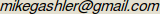

Documentation
Change Log
Download
Forums
Main Developer:
Mike Gashler

Thanks to everyone who has made contributions to this project, including:
- Desire' Gashler
- Kevin Kemp
- Helaman Ferguson
- Roger Pack
- Marcelo Hashimoto
- Eric Moyer
- Jean-Pierre Moreau
- Olaf Krzikalla
- Ivan Yanikov
I learned about machine learning at:
Hosting provided by:
Graphics built with:
Licensed under the LGPL:
Image compression by:
Waffles Documentation
Waffles is a collection of command-line tools for performing machine learning tasks. These tools are divided into 4 script-friendly apps:
waffles_learn contains tools for supervised learning.
waffles_transform contains tools for manipulating data.
waffles_plot contains tools for visualizing data.
waffles_generate contains tools to generate certain types of data.
waffles_transform contains tools for manipulating data.
waffles_plot contains tools for visualizing data.
waffles_generate contains tools to generate certain types of data.
For people who prefer not to have to remember commands, waffles also includes a graphical tool called
which guides the user to generate a command that will perform the desired task.
Class Library
To assist with research, the functionality of the waffles tools is provided in an object-oriented C++ class library called GClasses. The API Documentation for the this library shows that this is a breadth-oriented library. That is, it includes tools for a broad range of purposes, but typically leans toward simplicity rather than depth in most areas. Several demo apps are also included to show how to use the this library. A supplementary library, called GSup, contains common functionality not related to machine learning used in these apps.Q & A
What does "waffles" stand for?
It's not an acronymn. It's a reference to a tasty breakfast food. One of my machine learning professors
frequently used waffles in his analogies, so now every Saturday morning when I wake up craving waffles,
my mind typically begins drifts into trying to solve some machine learning problem.
Where can I get the latest development sources?
svn co svn://gashler.com/wafflesCan I have commit access to your subversion repository?
I'd really appreciate your contributions. Please send me email.
How do I submit a feature request or bug report?
There's no need to be formal. Just send me email. If I get a lot of requests, perhaps I'll switch to a bug-tracking system, but until then, email will suffice.
Why did you drop my favorite demo app?
I probably grew tired of maintaining it. If you look at the history of this project, you will see that it goes through a huge amount of churn. Demo apps come and go from this project. You are certainly welcome to take an older demo and port it forward if you like.
How accurate are the supervised learning algorithms in Waffles?
Here's a big table that shows the accuracy of several algorithms from the waffles_learn tool over several datasets. (I have made many changes to the code since I made this table. I am working to update the table.) I would welcome comparisons with similar algorithms in other toolkits, particularly if you can identify why one implementation is better than another.
On Windows when I link the GClasses library to my project, I get a bunch of linker errors saying msvcrt.lib and libcmt.lib are fighting with each other. How do I fix that?
Microsoft provides multiple incompatible versions of their C++ runtime libraries, and somehow they managed to design their compiler such that any library you build will only link with one of those runtime libraries. So you have to be careful to make sure that you build all of your libraries with the same settings. To do this, open your solution in VC++. In the Solution Explorer, right-click on GClasses, then click "Properties". Check the following settings, and make sure that they match the settings for your libraries and project: Configuration Properties->General->Use of MFC, Configuration Properties->C/C++->Code Generation->Basic Runtime Checks, and Configuration Propterties->C/C++->Code Generation->Runtime Library. If those all match and you still have problems, try use a diffing program to examine everything that differs between the GClasses.vcproj file and the .vcproj files for your program. If you still have problems, I'd recommend switching to a non-proprietary operating system where problems like this can be fixed instead of just worked around.
How do I debug a Waffles app with KDevelop?
If you use KDevelop3, go to "Project->Import Existing Project". After you run
through the wizard, go to "Project->Project
Options->Run Options" and fix the name of the executable binary. (The executable binary is in the bin folder, not the src folder. Use the binary that ends with "dbg". The one that doesn't end with dbg is the optimized one.)
If you use KDevelop4, go to "Project->Open/Import Project". Choose the Makefile for the app you want to debug. Next, go to "Run->Configure Launches". Click on the name of the app. Click on the green plus sign. Specify the right executable binary. (The executable binary is in the bin folder, not the src folder. Use the binary that ends with "dbg". The one that doesn't end with dbg is the optimized one.)
If you use KDevelop4, go to "Project->Open/Import Project". Choose the Makefile for the app you want to debug. Next, go to "Run->Configure Launches". Click on the name of the app. Click on the green plus sign. Specify the right executable binary. (The executable binary is in the bin folder, not the src folder. Use the binary that ends with "dbg". The one that doesn't end with dbg is the optimized one.)